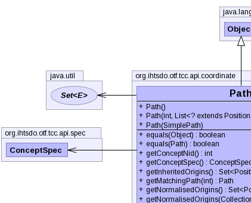
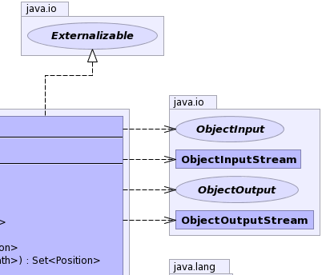
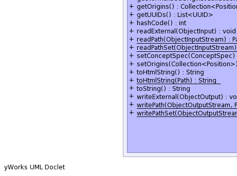
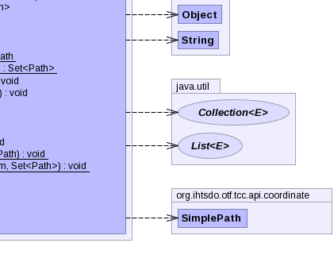

public class Path extends Object implements Externalizable
|  |  |
|  |  |
| Constructor and Description |
|---|
Path()
No arg constructor for JAXB
|
Path(int conceptId,
List<? extends Position> origins) |
Path(SimplePath another) |
| Modifier and Type | Method and Description |
|---|---|
boolean |
equals(Object obj) |
boolean |
equals(Path another) |
int |
getConceptNid() |
ConceptSpec |
getConceptSpec() |
Set<Position> |
getInheritedOrigins() |
Path |
getMatchingPath(int pathId) |
Set<Position> |
getNormalisedOrigins() |
Set<Position> |
getNormalisedOrigins(Collection<Path> paths) |
Collection<Position> |
getOrigins() |
List<UUID> |
getUUIDs() |
int |
hashCode() |
void |
readExternal(ObjectInput in) |
static Path |
readPath(ObjectInputStream in) |
static Set<Path> |
readPathSet(ObjectInputStream in) |
void |
setConceptSpec(ConceptSpec conceptSpec) |
void |
setOrigins(Collection<Position> origins)
Added to support jaxb unmarshalling.
|
String |
toHtmlString() |
static String |
toHtmlString(Path path) |
String |
toString() |
void |
writeExternal(ObjectOutput out) |
static void |
writePath(ObjectOutputStream out,
Path p) |
static void |
writePathSet(ObjectOutputStream out,
Set<Path> viewPositions) |
public Path()
public Path(SimplePath another)
public void readExternal(ObjectInput in) throws IOException, ClassNotFoundException
readExternal in interface ExternalizableIOExceptionClassNotFoundExceptionpublic void writeExternal(ObjectOutput out) throws IOException
writeExternal in interface ExternalizableIOExceptionpublic boolean equals(Path another)
public int getConceptNid()
public ConceptSpec getConceptSpec() throws IOException
IOExceptionpublic void setConceptSpec(ConceptSpec conceptSpec) throws IOException
IOExceptionpublic Collection<Position> getOrigins()
public void setOrigins(Collection<Position> origins)
origins - public Set<Position> getNormalisedOrigins(Collection<Path> paths)
public Path getMatchingPath(int pathId)
public static String toHtmlString(Path path) throws IOException
IOExceptionpublic static void writePath(ObjectOutputStream out, Path p) throws IOException
IOExceptionpublic static Path readPath(ObjectInputStream in) throws IOException, ClassNotFoundException
IOExceptionClassNotFoundExceptionpublic static Set<Path> readPathSet(ObjectInputStream in) throws IOException, ClassNotFoundException
IOExceptionClassNotFoundExceptionpublic static void writePathSet(ObjectOutputStream out, Set<Path> viewPositions) throws IOException
IOExceptionpublic String toHtmlString() throws IOException
IOExceptionCopyright © 2013 International Health Terminology Standards Development Organisation. All rights reserved.